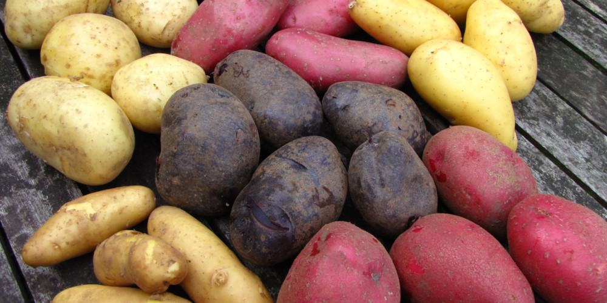
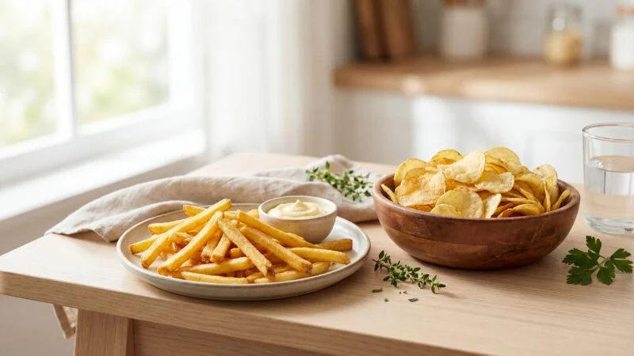
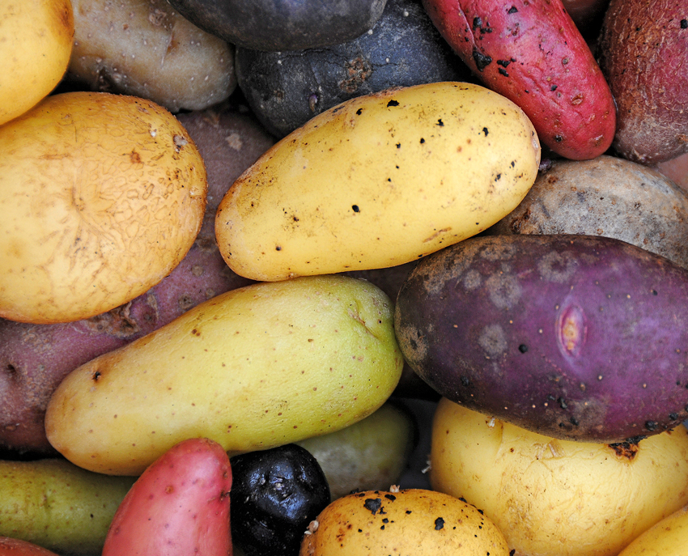
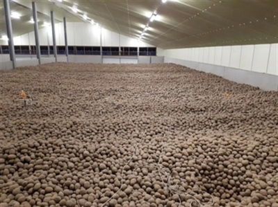
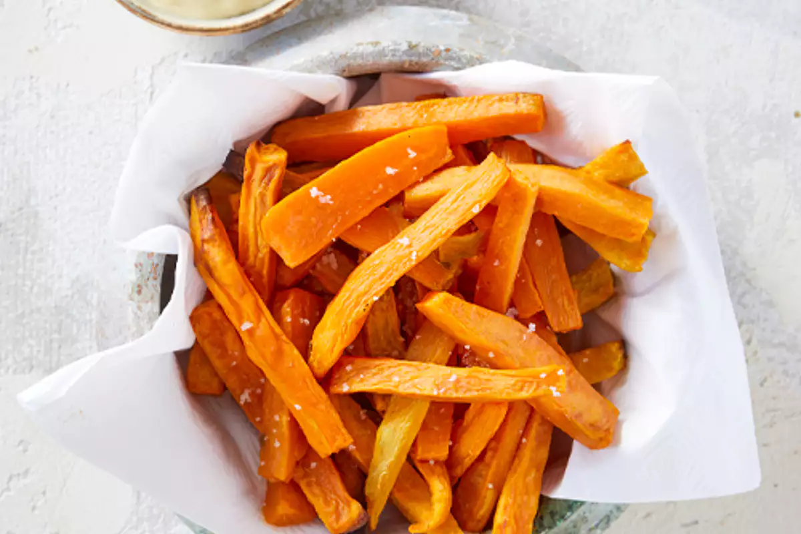

De aardappel, oorspronkelijk afkomstig uit Peru, wordt al meer dan 7.000 jaar verbouwd. De Inca's ontwikkelden methoden om aardappelen jarenlang te bewaren, zoals het vriesdrogen tot chuño. Toen Spaanse ontdekkingsreizigers de aardappel in de 16e eeuw naar Europa brachten, waren veel Europeanen ervan overtuigd dat de knol giftig was. In feite werd hij aanvankelijk vooral als sierplant gebruikt. Pas in France, dankzij de promotie door apotheker Antoine-Augustin Parmentier, kreeg de aardappel echt een plek op het bord. Helaas bracht de aardappelziekte in de 19e eeuw grote ellende, zoals de Grote Hongersnood in Ierland.
Vandaag de dag zijn er wereldwijd meer dan 4.000 verschillende rassen, met kleuren variërend van geel en rood tot blauw, paars en zelfs bijna zwart. De paarse aardappelen danken hun kleur aan antioxidanten genaamd anthocyanen. Een aardappel bestaat voor ongeveer 80% uit water en bevat meer kalium dan een banaan, terwijl hij van nature geen vet bevat. De schil is rijk aan vezels en andere voedingsstoffen.


De aardappel heeft ook een culturele impact gehad. In België werden frieten populair, terwijl chips per ongeluk werden uitgevonden in 1853 door George Crum. Interessant genoeg heet het gerecht in Frankrijk simpelweg “frites”. Tijdens de Tweede Wereldoorlog werden aardappelen zelfs gebruikt voor noodbrandstof of als betaalmiddel.
Aardappelen zijn veelzijdig: ze kunnen worden gekookt, gebakken, gepureerd, gefrituurd of omgezet in alcohol, zoals wodka, en zelfs in zetmeel, lijm of biologisch afbreekbaar plastic. In 1995 werden aardappelen de eerste groente die in de ruimte werd geteeld, onder toezicht van NASA. Zelfs een rauwe aardappel kan elektriciteit geleiden en een klein lampje laten branden.


Hoewel zoete aardappelen vaak worden verward met gewone aardappelen, behoren ze tot een andere plantenfamilie. De aardappel zelf groeit onder de grond, terwijl het groene deel erboven giftig is vanwege solanine. Overigens kan een aardappel uitlopen als hij te veel licht krijgt.
Op het wereldtoneel zijn aardappelen een van de belangrijkste voedselgewassen, na rijst, tarwe en maïs. China is tegenwoordig de grootste producent. Een gemiddelde aardappelplant levert meestal 5 tot 10 aardappelen. De naam “patat” komt van het Spaanse woord “patata”. Sommige aardappelen zijn speciaal geschikt voor puree, koken of friet. De zwaarste ooit gemeten woog bijna 5 kilo, en er bestaan zelfs aardappelmusea, zoals in Duitsland. Wereld Aardappel Dag wordt jaarlijks op 30 mei gevierd, erkend door de Verenigde Naties.
Kortom, de aardappel is niet alleen een veelzijdige en voedzame knol, maar ook een culturele en wetenschappelijke held met een geschiedenis die miljoenen mensen over de hele wereld heeft gevoed en beïnvloed.